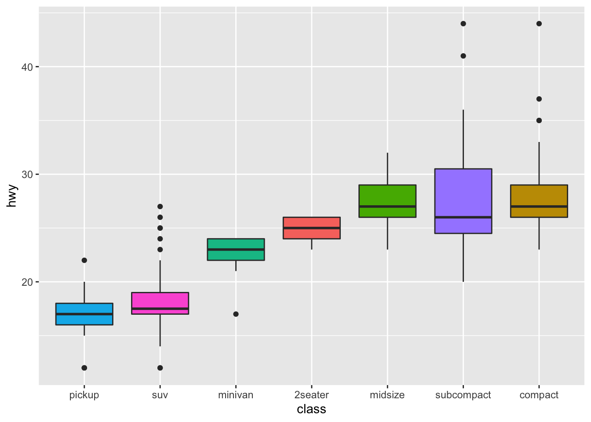

More about this website.
sessionInfo()## R version 4.1.0 (2021-05-18)
## Platform: x86_64-apple-darwin17.0 (64-bit)
## Running under: macOS Catalina 10.15.7
##
## Matrix products: default
## BLAS: /System/Library/Frameworks/Accelerate.framework/Versions/A/Frameworks/vecLib.framework/Versions/A/libBLAS.dylib
## LAPACK: /Library/Frameworks/R.framework/Versions/4.1/Resources/lib/libRlapack.dylib
##
## locale:
## [1] en_US.UTF-8/en_US.UTF-8/en_US.UTF-8/C/en_US.UTF-8/en_US.UTF-8
##
## attached base packages:
## [1] stats graphics grDevices utils datasets
## [6] methods base
##
## other attached packages:
## [1] forcats_0.5.1 stringr_1.4.0 dplyr_1.0.7
## [4] purrr_0.3.4 readr_2.0.1 tidyr_1.1.3
## [7] tibble_3.1.5 ggplot2_3.3.5 tidyverse_1.3.1
##
## loaded via a namespace (and not attached):
## [1] tidyselect_1.1.1 xfun_0.27 bslib_0.3.1
## [4] haven_2.4.3 colorspace_2.0-2 vctrs_0.3.8
## [7] generics_0.1.0 htmltools_0.5.2 yaml_2.2.1
## [10] utf8_1.2.2 rlang_0.4.12 jquerylib_0.1.4
## [13] pillar_1.6.4 withr_2.4.2 glue_1.4.2
## [16] DBI_1.1.1 dbplyr_2.1.1 modelr_0.1.8
## [19] readxl_1.3.1 lifecycle_1.0.1 munsell_0.5.0
## [22] gtable_0.3.0 cellranger_1.1.0 rvest_1.0.1
## [25] evaluate_0.14 labeling_0.4.2 knitr_1.36
## [28] tzdb_0.1.2 fastmap_1.1.0 fansi_0.5.0
## [31] broom_0.7.9 Rcpp_1.0.7 backports_1.3.0
## [34] scales_1.1.1 jsonlite_1.7.2 farver_2.1.0
## [37] fs_1.5.0 hms_1.1.0 digest_0.6.28
## [40] stringi_1.7.5 grid_4.1.0 cli_3.1.0
## [43] tools_4.1.0 magrittr_2.0.1 sass_0.4.0
## [46] crayon_1.4.2 pkgconfig_2.0.3 ellipsis_0.3.2
## [49] xml2_1.3.2 reprex_2.0.1 lubridate_1.7.10
## [52] rstudioapi_0.13 assertthat_0.2.1 rmarkdown_2.10
## [55] httr_1.4.2 R6_2.5.1 compiler_4.1.0library(ggplot2)
library(tidyverse)
mpg %>%
ggplot( aes(x=reorder(class, hwy), y=hwy, fill=class)) +
geom_boxplot() +
xlab("class") +
theme(legend.position="none")
Hahahahahaha.